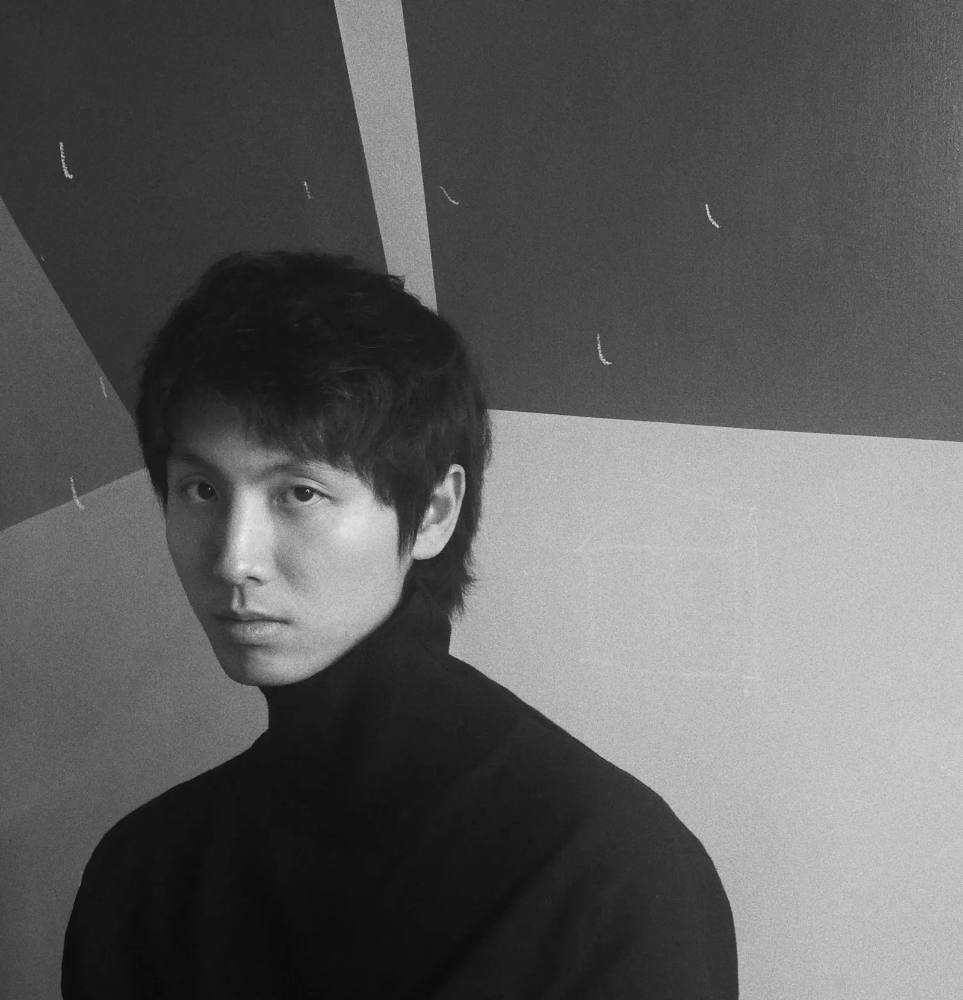

About 关于

Biography
Yang Hongru is an artist based in Beijing whose practice explores the relationship between space, boundaries, and individual experience.
Drawing from urban environments, everyday observations, historical memory, and philosophical inquiry, his paintings construct visual situations that exist between reality and imagination. Through layered compositions and spatial tensions, he investigates how environments shape perception, behavior, and identity.
Influenced by Chinese cultural traditions, contemporary painting, and the philosophy of Gilles Deleuze, Yang's work reflects on the dynamic relationship between freedom and structure, individuality and collectivity, memory and the present.
His paintings invite viewers to reconsider familiar spaces and experiences, revealing subtle forces that shape the way we inhabit and understand the world.
艺术家简介
杨鸿儒是一位生活和工作于北京的艺术家，其创作关注空间、边界与个体经验之间的关系。
他的绘画从城市环境、日常观察、历史记忆与哲学思考中汲取线索，构建介于现实与想象之间的视觉情境。通过层叠的构图与空间张力，他持续探讨环境如何塑造感知、行为与身份。
受中国文化传统、当代绘画以及吉尔·德勒兹哲学的影响，杨鸿儒的作品反思自由与结构、个体与集体、记忆与当下之间的动态关系。
他的绘画邀请观众重新审视熟悉的空间与经验，并看见那些塑造我们栖居和理解世界方式的细微力量。
Artist Statement
My practice begins with a simple question: how do spaces shape the way we perceive ourselves and others?
Through painting, I investigate the relationship between individuals and the environments they inhabit. I am interested in spaces that exist in states of transition-between public and private, memory and reality, order and uncertainty. These spaces are not merely backgrounds for human activity; they actively participate in the formation of perception, emotion, and identity.
Drawing from everyday observations, urban experiences, historical references, and philosophical thought, I construct paintings that blur the boundary between the familiar and the imagined. Figures, objects, and architectural elements coexist within fluid spatial structures where multiple temporalities and perspectives intersect.
Influenced by Chinese cultural traditions and contemporary philosophy, particularly the writings of Gilles Deleuze, I approach painting as a process of becoming rather than representation. The work is less concerned with depicting fixed realities than with revealing the invisible relationships and forces that continuously shape our experience of the world.
Through these paintings, I hope to create spaces of reflection-places where viewers may encounter uncertainty, possibility, and new ways of seeing.
艺术家陈述
我的创作始于一个朴素的问题：空间如何塑造我们感知自身与他者的方式？
我通过绘画考察个体与其所处环境之间的关系。我关注那些处于过渡状态的空间：公共与私人之间、记忆与现实之间、秩序与不确定之间。这些空间并不只是人类活动的背景，它们同样参与感知、情绪与身份的形成。
从日常观察、城市经验、历史图像与哲学思想出发，我构建出模糊熟悉与想象边界的绘画空间。人物、物件与建筑元素在流动的空间结构中并置，使多重时间与视角彼此交汇。
在中国文化传统与当代哲学，尤其是吉尔·德勒兹思想的影响下，我将绘画视为一种生成过程，而不是对固定现实的再现。作品更关心那些持续塑造我们世界经验的不可见关系与力量。
我希望通过这些绘画创造出可供反思的空间，使观者在其中遭遇不确定性、可能性与新的观看方式。